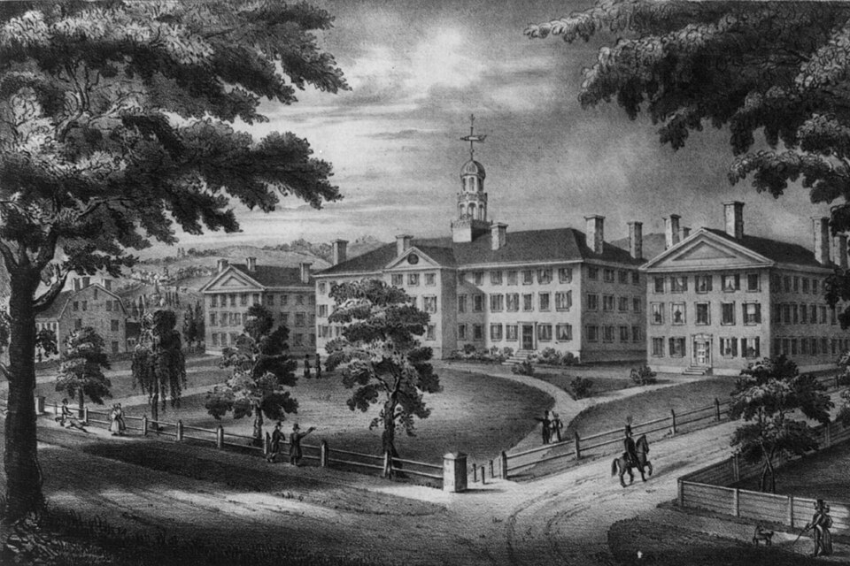

1956년 6월, 뉴햄프셔의 작은 대학 도시 하노버. 다트머스 수학과 건물 2층의 한 방이 두 달 동안 ‘인공지능 워크숍’의 본부가 됩니다.
참여자는 시기마다 들고 났습니다 — 일주일만 머문 사람, 두 달 내내 있던 사람. 정해진 강의도 발표 일정도 없었습니다. 칠판과 분필, 그리고 긴 토론이 전부였습니다.

Dartmouth College · 본 워크숍 장소(수학과 건물)